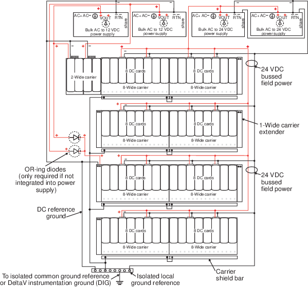
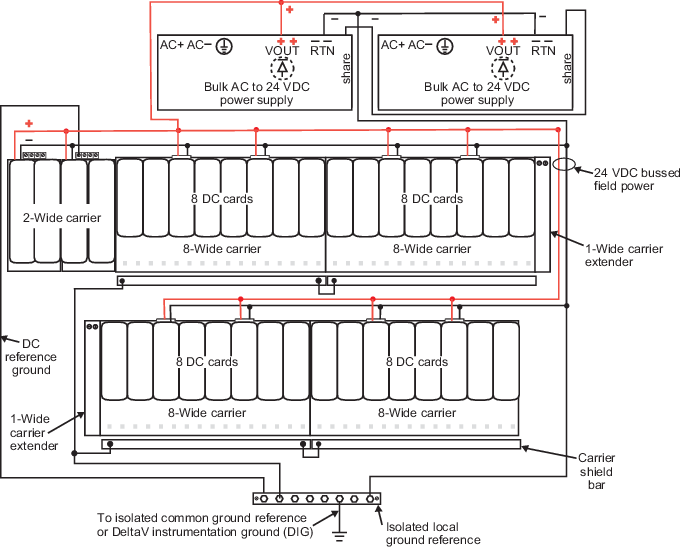

Using OR-ing Diodes with Legacy Bulk Power Supplies
The legacy DIN rail-mounted Bulk Power Supplies have an integrated OR-ing diode to isolate power supply faults and are set at 12.3 or 24.6 VDC. If the legacy DIN rail-mounted Bulk Power Supply is used in a system that requires redundancy or load sharing, connect the SHARE terminals on the top of the power supplies to terminal strips or bus bars. One or both of the VOUT (+) and RTN (-) connections must go to the same location.

If the legacy panel-mounted Bulk Power Supply or a bulk power supply without OR-ing diodes from another manufacturer is used in a system that requires redundant power, use external OR-ing diodes (such as the Weidmuller USA #998786 dual rectifier diode module) to isolate power supply faults. Because an external OR-ing diode has a nominal .7 V drop, the output of each supply must be adjusted to account for the drop or the voltage to the carriers might be too low. The recommended adjustments, after the OR-ing diodes, are:
- 12.3 VDC for a 12 VDC bulk power supply
- 24.6 VDC for a 24 VDC bulk power supply
Verify these voltages with one bulk power supply disabled to ensure operation in a fault condition.
If additional 12 VDC power is required for a carrier that is powered by a bulk power supply without integrated OR-ing diodes, connect the primary and secondary bulk power supplies through OR-ing diodes with the output going only to the extender cable, not to the system power supplies as shown in Power and Grounding for a 12 VDC System Power Supply (Dual DC/DC) with Legacy Bulk Power Supplies.
The following table shows the current provided to the system based on the number of legacy DIN rail-mounted Bulk Power Supplies (AC to 12 and 24 VDC) and whether simplex or redundant power is used in the configuration. Connecting Multiple Legacy DIN Rail-Mounted Bulk Power Supplies shows the connections for four DIN rail-mounted Bulk Power Supplies. A fifth supply can be connected in the same manner for redundancy.
| Number of legacy Bulk Power Supplies (AC to 24 VDC and AC to 12 VDC) | System Current Provided by Simplex Power | System Current Provided by Redundant Power |
|---|---|---|
| 1 | 12 A | N/A |
| 2 | 24 A | 12 A |
| 3 | 36 A | 24 A |
| 4 | 48 A | 36 A |
| 5 | N/A | 48 A |

Power and Grounding for an AC System Power Supply shows power and grounding for an AC System Power Supply and DeltaV bulk power supplies. Note that the 2-wide carrier must be connected to the DC Ground.
Power and Grounding for a 12 VDC System Power Supply (Dual DC/DC) with Legacy Bulk Power Supplies shows power and grounding for a 12 VDC System Power Supply (Dual DC/DC) used with legacy bulk power supplies. Note that the 2-wide carrier is not connected to ground because the legacy 12 VDC Bulk Power Supplies are connected to the isolated common ground reference or to the DeltaV instrumentation ground.
Power and Grounding for a 12 VDC System Power Supply (Dual DC/DC) with Legacy Bulk Power Supplies also shows:
- How to provide redundant 24 VDC bussed field power
- The recommended method for connecting 12 VDC redundant legacy bulk power supplies to redundant system power supplies
- How to extend 12 VDC bulk power to the carriers
Providing Redundant 24 VDC Bussed Field Power
In Power and Grounding for a 12 VDC System Power Supply (Dual DC/DC) with Legacy Bulk Power Supplies, the legacy 24 VDC Bulk Power Supplies are connected together to provide the redundant bussed field power. The OR-ing diodes are integrated into the power supply.
Connecting Redundant 12 VDC Legacy Bulk Power to Redundant System Power Supplies
As shown in Power and Grounding for a 12 VDC System Power Supply (Dual DC/DC) with Legacy Bulk Power Supplies, the recommended method for connecting redundant legacy bulk power supplies to redundant system power supplies is to connect the primary legacy bulk power supply directly to the primary system power supply and to connect the secondary legacy bulk power supply directly to the secondary system power supply. Do not connect the legacy bulk power supplies together because a single high-voltage failure in either bulk power supply could cause both system power supplies to reset which in turn causes both controllers to reset. OR-ing diodes are not required in this situation.
Extending 12 VDC Legacy Bulk Power to the Carriers
Also shown in Power and Grounding for a 12 VDC System Power Supply (Dual DC/DC) with Legacy Bulk Power Supplies are OR-ing diodes used for extending 12 VDC power to the carrier when OR-ing diodes are not integrated into the bulk power supply. The primary and secondary legacy bulk power supplies are connected through OR-ing diodes with the output going to the extender cable not to the system power supply.

Power and Grounding for a 24 VDC System Power Supply (Dual DC/DC) with Legacy Bulk Power Supplies shows power and grounding for a 24 VDC System Power Supply (Dual DC/DC) used with legacy bulk power supplies. It also shows connections for providing 24 VDC bussed field power. In Power and Grounding for a 24 VDC System Power Supply (Dual DC/DC) with Legacy Bulk Power Supplies. The legacy bulk power supplies are connected together to provide power to the system power supplies and to provide bussed field power. The OR-ing diodes are integrated into the legacy bulk power supply. Note that in Power and Grounding for a 24 VDC System Power Supply (Dual DC/DC) with Legacy Bulk Power Supplies the 2-wide carrier is connected to the isolated common ground reference or to the DeltaV instrumentation ground.

For grounding information for DeltaV Bulk Power supplies refer to Extended Power Diagram.
.